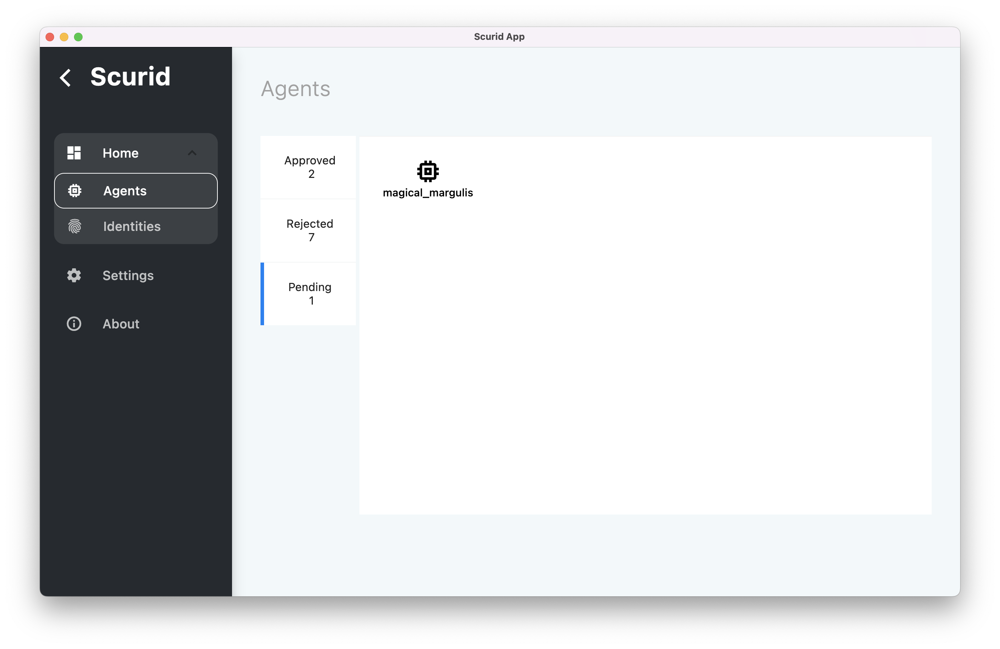
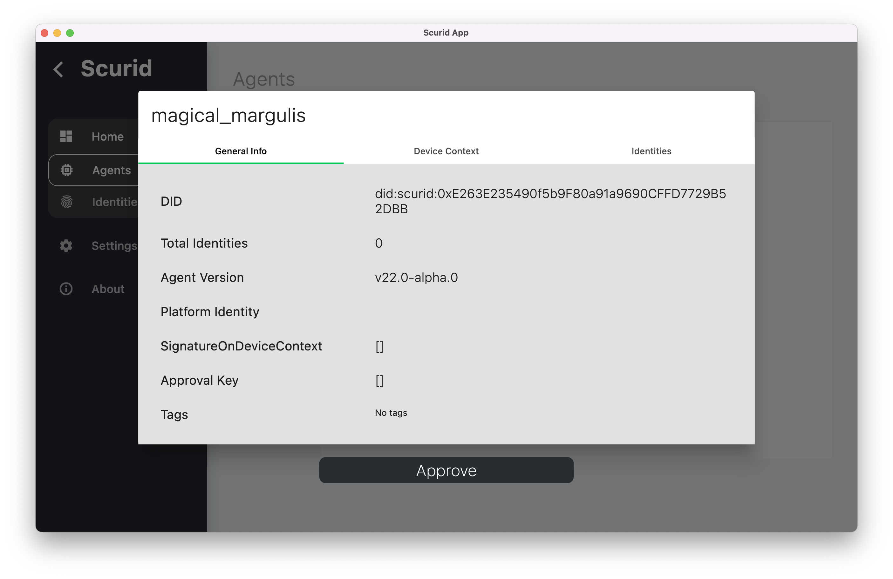
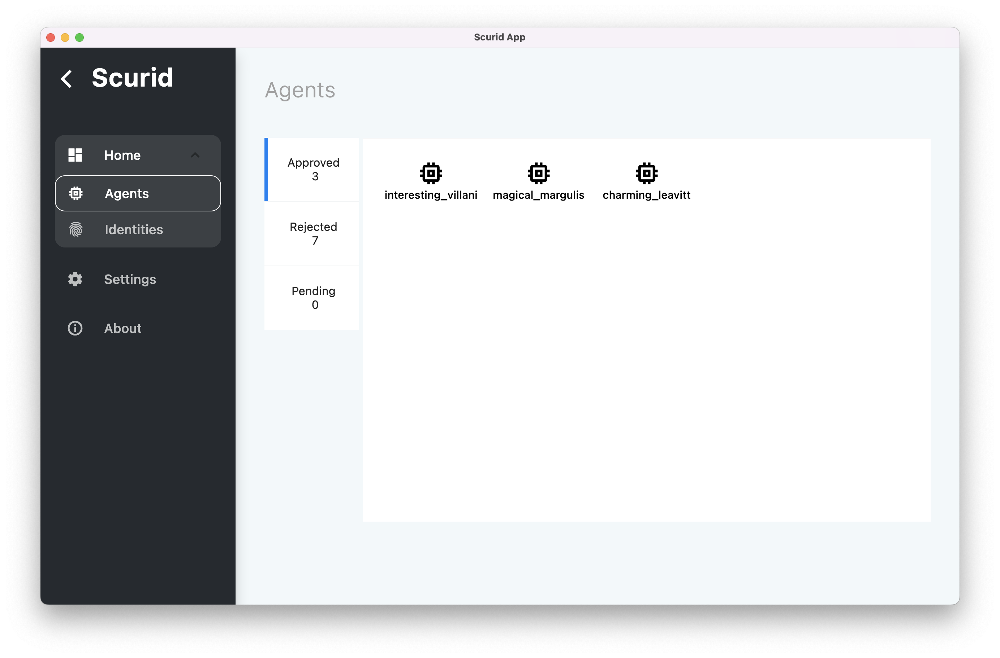
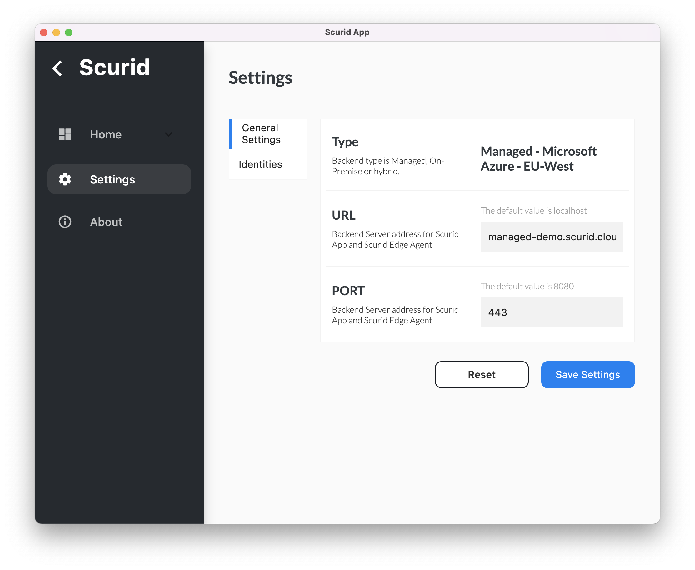
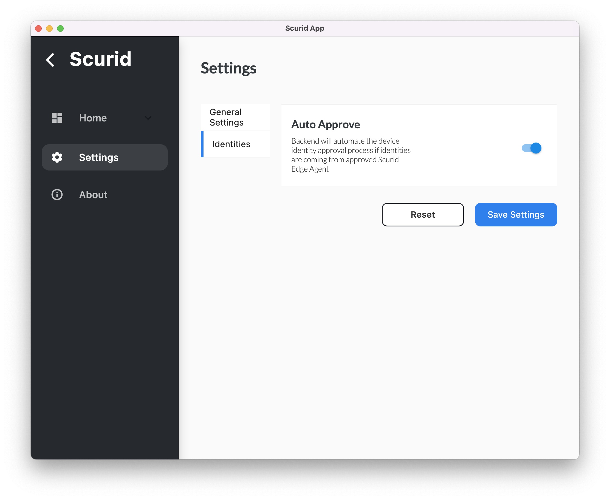

Autonomous Device and agent setup
Agent framework, as part of the core functionality, enables you to have your devices generate identity and reach out for identity workflow actions.
Features
- Simplifies tracking of all agents deployed in your IoT network
- Extends device identity tracking not only to each device but also to each agent
- Capabilities to auto-approve an identity when coming from the trusted agents, further simplifying the individual identity workflow
Step 1 - Executing Scurid Edge Agent on IoT device
- Run agent
./scuridedgeagent - It exposes
-syncrateflag./scuridedgeagent -syncrate 90s -syncratedefines how often the Edge agent will check for the pending agent's status with the Scurid backend- Agent will start using
-syncrateon agent startup, and continue to reference it until agent's status is confirmed - Once completed agent will not use it any further, until restart of the agent, where steps 1.2 to 1.3 will be repeated
- Post successful run of the agent, it will automatically set up
config.yamlat location defined with the flag-storefile with a new agent identity, if none created so far, and will attempt to contact the server passed to the agent using-spaaddrflag to inform the server about new agent's identity - Post user's review of the identity, depending on the decision (i.e. approved / revoked ) agent will download the approval key which will be appended to
config.yaml
Step 2 - Agent workflow via Scurid App or APIs
Once the agent is installed and successfully run on an IoT hardware, it will send out on-boarding request which can be reviewed either via Scurid App or Scurid Backend's APIs
Scurid App
- Launch the app to review the pending agents 
- Select the agent to review and approve. Notice along with the agent identity - it also sends out the related hardware details 
- Once approved, agent will be available for use via the approved list 
Scurid backend's APIs
Backend exposes following set of Agent ID related workflow APIs under PlatformAPIv2 which can be integered into your own IoT platform or Analytics platform
Related APIs
-
GetAgentsList: Provides list of all the agent related identities on the backend server -
GetAgentInfo: Provides an agent’s detailed information -
RegisterAgent: Used for approving a pending agent identity, Scurid SSI service call is wrapped within to appropriately handle data on the DLT managed under SSI -
RevokeAgent: Revokes access for an agent, this is a global revocation of the agent’s identity, Scurid SSI service call is wrapped within to appropriately handle data on the DLT managed under SSI -
VerifyAgent: Re-verifies an already approved agent identity,Scurid SSI service call is wrapped within to appropriately handle data on the DLT managed under SSI
Automating device identity
With agent's setup successfully completed, you can now choose to enable automatic approval of device identities coming from the approved agent. By default, this is disabled - requiring manual approval of the identities.
To enable automatic identity approval, enable required configuration in the ID subsystem, which can be accessed via
Option 1 : Enable via App's UI
- Navigate to the
Settingspage  - Switch to Identities and enable the
Auto Approvesetting 
Option 2 : Enable via Backend APIs
- API endpoint group named
Subsystemswhich contains two APIs GetIDSettings: Allows the caller to get currently configurable settings for theSubsystemautoApproveDeviceIDwhich enables/disables auto-approve function for the device identities- To offer full control to the users, this settings is set to
falseby default, i.e. users can decide to review each identity despite having an approved agent creating these identities. SetIDSettings: Allows the caller to set the desired state for configurable settings likeautoApproveDeviceID
Once the agent is approved and for the time period autoApproveDeviceID is enabled - all upcoming new identities from the approved agents will be auto approved!